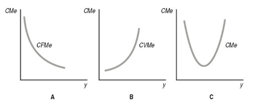
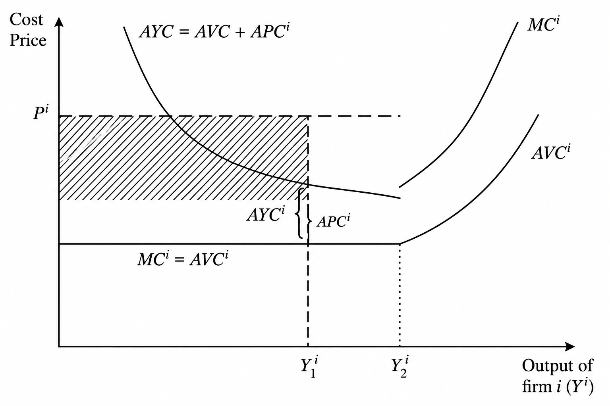

4 Modelo Kaleckiano Canônico
4.1 A Determinação dos Lucros e da Renda Nacional em Kalecki
Esta seção apresenta, de forma didática, a teoria kaleckiana da determinação dos lucros e da renda nacional, baseada em Hein (2014).
Kalecki distingue duas questões fundamentais: (i) o nível dos lucros, determinado pela demanda efetiva, especialmente pelo investimento;(ii) a distribuição funcional da renda, determinada pelo grau de monopólio (markup). Assim, é possível alterar a participação dos lucros na renda sem alterar, necessariamente, o montante absoluto de lucros.
Partindo da identidade da renda,
\[\Pi + W = C_w + C_{\pi} + I\]
reorganizando os termos,
\[\Pi = C_w - W + C_{\pi} + I\]
Como a poupança dos trabalhadores é definida por \(S_w = W - C_w,\) segue que
\[\Pi = C_{\pi} + I - S_w.\]
Assumindo que os trabalhadores gastam integralmente sua renda,\(S_w = 0,\) obtém-se:
\[\Pi = C_{\pi} + I. \tag{4.1}\]
Nesta expressão aparece uma das ideias centrais da teoria kaleckiana: os capitalistas podem decidir quanto gastar, mas não podem decidir quanto lucrar no período subsequente. O gasto autônomo antecede a renda e determina o montante de lucros realizado pela economia.
A Equação 4.1 expressa o princípio da demanda efetiva, contrariando diretamente a Lei de Say. A partir dela, Kalecki conclui que os capitalistas podem decidir gastar mais no período subsequente, mas não podem decidir obter maiores lucros. A única variável verdadeiramente autônoma é o gasto; a renda e os lucros são determinados posteriormente pelo processo multiplicador.
Daí decorre o conhecido aforismo atribuído a Kaldor:
Os capitalistas ganham o que gastam e os trabalhadores gastam o que ganham.
É importante notar a generalidade do princípio da demanda efetiva. Não se trata apenas da ideia de que o gasto dos capitalistas gera lucros. Em termos mais amplos, a renda macroeconômica é determinada pelos gastos que a antecedem.Macroeconomicamente, portanto, é incorreto afirmar que um gasto decorre de uma renda previamente existente. A renda somente passa a existir quando algum agente realiza um gasto. Caso esse gasto não ocorra, a renda correspondente também não existirá. O gasto decorre de um poder de compra concedido por algum agente hierarquicamente superior e, uma vez realizado, gera uma renda de igual valor. Essa renda, por sua vez, origina uma poupança exatamente igual ao gasto inicial.
O princípio da demanda efetiva pode ser generalizado dizendo que as variáveis de demanda determinam as variáveis de oferta.
Assim,
- o gasto gera a renda;
- o investimento gera a poupança;
- o gasto dos capitalistas gera os lucros;
- o gasto público gera a arrecadação tributária;
- e assim sucessivamente.
Suponha agora que o consumo dos capitalistas seja uma fração constante de seus lucros,
\[C_{\pi} = c_{\pi} \Pi.\]
Substituindo essa expressão na equação dos lucros,
\[\Pi = c_{\pi}\Pi + I.\]
Isolando os lucros,
\[\Pi = \frac{I}{1-c_{\pi}}.\]
Como a propensão a poupar dos capitalistas é definida por
\[s_c = 1-c_{\pi},\]
segue que
\[\Pi = \frac{I}{s_c}. \tag{4.2}\]
Esta expressão corresponde ao primeiro multiplicador kaleckiano. Quanto menor for a propensão a poupar dos capitalistas, maior será o volume de lucros gerado para um mesmo nível de investimento (os capitalistas ganham o que gastam).
Dividindo os lucros pela renda, obtém-se uma aproximação da participação dos lucros na renda (profit-share), o que pode ser expressa como \(\pi=\frac{\Pi}{Y}\). Substituindo essa definição na expressão anterior,
\[\begin{aligned} \pi=\frac{I}{Ys_\pi} \\ \pi Y s_\pi = I\\ Y=\frac{I}{s_\pi \pi} \end{aligned}\]
Também é possível obter esse resultado partindo da identidade macroeconômica
\[I=S,\]
e assumindo que toda a poupança provém dos lucros,
\[I=s_\pi\Pi=s_\pi\pi Y\]
Logo,
\[Y=\frac{I}{s_\pi\pi}. \tag{4.3}\]
Esta expressão representa o multiplicador da renda kaleckiano, mostrando como o investimento determina o nível de renda de equilíbrio.
O paradoxo da parcimônia (Paradox of Thrift) permanece válido. Caso os capitalistas aumentem sua propensão a poupar, o multiplicador diminui, reduzindo a renda e os próprios lucros.
Kalecki também argumentou que, quando o investimento é financiado por crédito bancário, o próprio processo de gasto gera os depósitos necessários para liquidar posteriormente esse crédito. Dessa forma, o investimento cria a poupança correspondente (investment finances itself), antecipando ideias posteriormente desenvolvidas pela teoria pós-keynesiana do circuito monetário.
Por fim, considere um aumento do grau de oligopólio, elevando o markup. Pela teoria de preços de Kalecki, isso aumenta o profit-share \((\pi)\). Entretanto, mantendo constante o investimento autônomo, o primeiro multiplicador (ver Equação 4.2) mostra que o montante de lucros permanece inalterado. O ajuste ocorre por meio do multiplicador da renda (Equação 4.3), de modo que um aumento da participação dos lucros reduz o nível de renda de equilíbrio, embora o montante absoluto de lucros permaneça constante \(\pi\uparrow=\frac{\Pi}{Y\downarrow}\).
Uma das contribuições centrais de Kalecki consiste em distinguir claramente:
- o nível dos lucros, determinado pela demanda efetiva; e
- a participação dos lucros na renda, determinada pelo grau de monopólio (markup).
Esses dois conceitos não devem ser confundidos.
4.2 A Formação de preços e distribuição de renda
Se a renda é determinada pela distribuição e pelos gastos, então não será o nível de renda que determinará os preços, como pressupõem as teorias de inflação de demanda. Precisamos, portanto, compreender como ocorre a formação dos preços e como ela determina a distribuição funcional da renda.
A teoria neoclássica parte da hipótese de concorrência perfeita para justificar uma curva de custos médios em formato de “U”. À medida que a produção aumenta, chega-se a um ponto em que a escassez dos fatores produtivos provoca elevação dos custos variáveis e, consequentemente, do custo médio.

A teoria kaleckiana rejeita essa hipótese. Em vez de assumir mercados perfeitamente competitivos, Kalecki parte da ideia de que o capitalismo é inerentemente concentrado e que as firmas possuem poder de mercado.
Dessa forma, a curva de custos da firma pode ser representada por dois trechos distintos:
- um trecho aproximadamente horizontal, no qual a existência de capacidade ociosa permite ampliar a produção sem aumentos significativos dos custos;
- um trecho ascendente, quando a produção se aproxima da plena capacidade.

Como consequência, as empresas normalmente optam por operar abaixo da plena utilização da capacidade produtiva, preservando uma margem de segurança para responder a aumentos inesperados da demanda sem perder participação de mercado.
A existência de capacidade ociosa não é interpretada como uma imperfeição temporária do mercado, mas como uma característica normal do funcionamento das economias capitalistas. Ela constitui um elemento central da teoria kaleckiana da firma.
O ponto de pleno emprego, no entanto, não é intransponível, mas costuma ser evitado pelos altos custos envolvidos. A partir do ponto de pleno emprego, os insumos ficam mais difíceis de serem acessados, as máquinas começam a quebrar com mais facilidade, os custos trabalhistas sobem e vários ônus são gerados. Como em tempos de guerra, as firmas até conseguem operar acima da plena capacidade, mas evitam.
Nessas condições, os preços deixam de ser determinados pelo equilíbrio entre oferta e demanda e passam a ser definidos pela aplicação de uma margem de mark-up sobre os custos unitários de produção. Estes custos unitários envolvem tanto os salários por unidade produzida \((w \frac{L}{Y} = wa)\) como os custos intermediários \((\mu)\), que podem ser interpretados como matérias-primas quando analisamos uma firma individual ou como insumos importados quando pensamos em uma economia aberta.
Escrevemos, então,
\[P=(1+ \tau)(wa+ p_\mu \mu) \tag{4.4}\]
em que
- \(P\) representa o preço do produto;
- \(w\) é a taxa de salário nominal;
- \(a\) corresponde ao requisito unitário de trabalho;
- \(wa\) representa o custo unitário do trabalho;
- \(m\) representa os custos intermediários por unidade produzida;
- \(j\) é a margem de mark-up.
Para estudar a relação entre a teoria de preços de Kalecki e a distribuição de renda podemos manipular a equação acima multiplicando-a por \(\frac{wa}{wa}\). Mas antes precisamos simplificar a relação de custo da matéria-prima por custo unitário como: \[j=\frac{p_\mu}{wa}\]
Substituindo essa definição na Equação Equação 4.4, obtemos
\[\begin{aligned} p = (1+\tau) \left({wa}+p_\mu \mu \frac{wa}{wa}\right)\\ p = (1+\tau) \left({wa}\left(1+\frac{p_\mu\mu}{wa}\right)\right)\\ p=(1+\tau)(wa(1+j)) \end{aligned}\]
A margem de lucro por unidade produzida pode então ser escrita como
\[\begin{aligned} \frac{\Pi}{Y}=\tau(wa(1+j))\\ \frac{\Pi}{Y}=\tau wa(1+j) \end{aligned}\]
Entretanto, ainda não podemos interpretar essa expressão como a participação dos lucros na renda (profit share), pois ela considera o valor bruto da produção, e não o valor adicionado.
O profit share é definido como
\[\pi=\frac{\Pi}{\Pi+W}.\] Dividindo todo mundo por \(Y\): \[\pi=\frac{\frac{\Pi}{Y}}{\frac{\Pi}{Y}+\frac{wL}{Y}}.\]
Substituindo as expressões para lucros e salários por unidade produzida, chega-se ao resultado
De forma equivalente, a participação dos salários na renda (wage share) é dada por
\[\begin{aligned} 1-\pi=\frac{W}{\Pi+W}\\ 1-\pi = \frac{wa}{\tau wa(1+j) + wa}\\ 1-\pi = \frac{1}{\tau(1+j)+1} \end{aligned}\]
Esses resultados mostram que a distribuição funcional da renda depende fundamentalmente de dois fatores:
- do grau de mark-up praticado pelas firmas \((\tau)\);
- da importância relativa dos custos intermediários na produção \((j)\).
Na teoria kaleckiana, a distribuição funcional da renda não decorre da produtividade marginal dos fatores de produção.
Ela é determinada pelo processo de formação de preços adotado pelas firmas.
Em outras palavras, a inflação de custos define a distribuição funcional da renda.
Em uma economia fechada, na qual desconsideramos custos intermediários importados \((j=0)\), podemos reduzir a Equação 4.5 à:
\[\pi=\frac{\tau}{1+\tau}. \tag{4.6}\]
Essa expressão evidencia que o aumento do mark-up eleva diretamente a participação dos lucros na renda.
O nível do mark-up depende de diversos fatores institucionais e estruturais da economia, entre os quais destacam-se:
- o grau de concentração industrial;
- o grau de verticalização da produção;
- a importância de formas de competição não relacionadas ao preço, como publicidade e diferenciação de produtos;
- os overhead costs das empresas;
- o poder de barganha dos sindicatos.
Esses fatores serão tratados como exógenos ao longo do desenvolvimento do modelo kaleckiano de crescimento, de modo que a distribuição funcional da renda será considerada previamente determinada pelo processo de formação de preços.